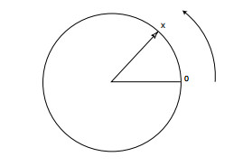

Probability spaces¶
This introduces the axioms of probability and connects them to counting problems - including combinatorials and permutations.
Learning outcomes:
What is a probability?
Two main points of view
belief based (Bayseian)
"I'm 90% sure that is a bad idea"
"I'm fairly confident the world won't end today"


independence of outcomes, and conditional probabilities - next week
Properties of probabilities¶
Modern probability theory is based on an (Kolmogorov) axiomatic description of the properties of probability.

Other definitions have been put forward, but for standard situations, they lead to the same behaviour that we'll discuss now.
Sample spaces, outcomes and events¶
Here an experiment is something that we can do in a (fairly) controlled way, doesn't have to be
Example What is the sample space of tossing a coin?
We'll express our sample space using set notation
$S=\{ H, T \}$
i.e. there are two possible outcomes - either a Head or a Tail.
Note that sample spaces are not unique, sometimes there will be more than one way to break down and list the possible outcomes.
Example: An 'experiment' consists of flipping two coins? Give two possible sample spaces.
Define a single coin flip $F = \{H, T\}$.
Then we have
$S=\{ F \times F \} = \{(H,H),(H,T),(T,H),(H,H)\}$
Alternatively, we could have three outcomes - 0 heads come up between the two flips, 1 head or 2 heads
$$ S = \{0,1,2\} $$Now our element $\{0\}$ is identical to $\{T,T\}$ previously.
But $\{1\} = \{(H,T),(T,H)\}$
Outcomes¶
(If the sample space is finite, or countably infinite, it will correspond to a discrete random variable.)
Example A die is rolled once. We let $X$ be the outcome of the experiment. The sample space for the experiment is the 6-element set
$$ S = \{1,2,3,4,5,6 \}, $$and each outcome $i$, for $i = 1 \ldots 6$, corresponds to the number of dots on the face that faces up.
Events¶
(Set $A$ is a subset of set $B$, $A \subseteq B$, if all of the members of $A$ are also contained in $B$)
Example what is the event, $E$, corresponding to a die coming up with an even number?
Example: Consider a road race with the runners labelled 1 to 4.
What is the event $A$ that runner 1 won the race?
$S = \{\text{all orderings of (1,2,3,4)} \} = \{(x_1,x_2,x_3,x_4:x_i = 1,2,3,4,x_i \neq x_j)\}$
$A = {1234, 1243, 1324, 1342, 1423, 1432} = {\text{all ordering of (1234) beginning with 1}} = \{(x_1,x_2,x_3,x_4:x_1 = 1, x_i = 2,3,4, x_i \neq x_j)\}$
note that $A \subset S$
What is the event $B$ that runner 2 lost the race?
$B = {1342,1432,3142,3412,4132,4312} = {\text{all ordering of (1234) ending with 2}} =\{(x_1,x_2,x_3,x_4:x_4 = 2, x_i = 2,3,4, x_i \neq x_j)\}$
note again that $B \subset S$
Set theory¶
Looking ahead.
Our events are sets.
We can apply results from set theory.
The event that $E_A$ and $E_B$ has occured is denoted $E_A \cap E_B$, called the intersection of $E_A$ and $E_B$, and is composed of the outcomes that are in both $E_A$ and $E_B$.
Example - Four runners are racing. What is the event, $A$, that runner 1 was first and runner 2 was last?
Define $E_1$ the event that the first runner won the race $E_1 = \{1234, 1243, 1324, 1342, 1423, 1432\}$ and $E_2$ the event that the second runner lost the race $E_2 = \{1342,1432,3142,3412,4132,4312\}$
$A$ is given by the intersection of $E_A$ and $E_B$, so outcomes that are in $E_1$ and $E_2$
\begin{align} E_1 \cap E_2 = & \{1234, 1243, 1324, 1342, 1423, 1432\} \cap \{1342,1432,3142,3412,4132,4312\} \\ = &\ \{1342,1432\} \end{align}Axioms of Probability¶
The axiomatic definitions of probabilities look like this:
We suppose that for each event $E$ of an experiment with sample space $S$ there is a number $P(E)$, which is in accord with the following three axioms:
We call a function $P(A)$ the probability of event $A$ if these axioms hold.
Note we are using 'intuition' or 'physical insight' or some other magic to decide the probabilities of the individual outcomes! There is no general way to do it for a given problem. We use every piece of information available to us, then compare it to reality if we are aiming to represent the real world with the probability distribution.
Sample spaces with equally likely outcomes¶
Often we can reasonably assume that each outcome of an experiment is equally likely - rolling a fair die, for instance. Or mathematically if the sample space $S$ is a finite set $S=\{1,2,...,N\}$ it is often natural to assume that
$$P(\{1\})=P(\{2\})=⋯=P(\{N\})=p$$Now it follows from axioms 2 and 3 that
$$1=P(S)=P(\{1\})+P(\{2\})+⋯+P(\{N\})=Np$$It then follows from axiom 3 that for any event $E \subset S$ its probability will be given by the number of elementary outcomes in $E$
$$P(E)=\frac{\text{Number of outcomes in } E}{ N}$$This means that to determine probabilities we need to count the number of ways in which a given event can occur.
Sample spaces with nonequally likely outcomes¶
In the more general case, we need to assign specific probabilities to the elementary outcomes, $P(\omega)$, so that
$$1=P(S)=P(\{1\})+P(\{2\})+⋯+P(\{N\})$$in order to satify axiom 2.
It then follows from axiom 3 that for any event $E \subset S$ its probability will be given by
$$P(E)= \sum \limits_{\omega \in E} P(\omega) $$This means that to determine probabilities we need to count the number of ways in which a given event can occur.
Example Experiment consists of throwing a coin twice - as we saw we can assign the sample space in two ways:
either
$$ S_1 = \{HH, HT, TH, TT \} $$with
$$ P(HH) = \frac{1}{4}, P(HT)=\frac{1}{4}, P(TH)=\frac{1}{4},P(TT)=\frac{1}{4} $$or
$$ S_2 = \{0,1,2\}. $$In the later case we take the number of times a head appears as our outcomes.
In the case of $S_2$ the probabilities of the individual outcomes are not equal - there are twice as many ways of getting the outcome 1 head ($\{(H,T),(T,H)\}$) as there are of getting 0 $(\{(T,T)\})$ or 2 $(\{(H,H)\})$.
So, it makes sense to have
$$ P(0) = \frac{1}{4}, P(1)=\frac{1}{2}, P(2)=\frac{1}{4} $$Summary¶
The probability of any event can be decided once we have the probability function, $P(\omega)$, for our experiment.
The probability function is the function $P(\omega)$, where the $\omega$ are the elementary outcomes of the experiment.
It has domain $S$.
It obeys the axioms of probability.
The actual probabilities are assigned based on some model, they are outside the idealised mathematical model.
We will demonstrate that the interpretation of $P(E)$ as the relative frequency of the event $E$ when the experiment is repeated many times is consistent with the axioms.
Belief based interpretations can also satisfy these requirements.
Warning: notations are not totally standard in probability theory. I'll use what I think is the closest to standard, and should allow you to read most works on probability.
Grinstead and Snell for instance, has some nice sections. But uses a slightly different notation. They call the sample space $\Omega$, the individual outcomes $\omega_i$ and call the probability function $m(\omega)$.
Interlude¶
you can have a think about this:
For a fair die, each outcome can be argued to be equally likely. We can deduce the probability $p$ of the outcomes as $$1=P(S)=P(\{1\})+P(\{2\})+⋯+P(\{6\})=6p$$ which implies that $p = \frac{1}{6}$, as you'd expect.
Define two events,
The number of elements in $A$ is $n(A)=n(b)=4$.
So $P(A) = n(A)*p = 4*1/6$ and $P(B) = n(B)*p = 4*1/6$
What is the probability of $A \cup B$. In words what is the probability that either "the dice roll is less than 5" or "the die roll is more than 2"?
Interlude¶
For a fair die, each outcome can be argued to be equally likely. We can deduce the probability $p$ of the outcomes as $$1=P(S)=P(\{1\})+P(\{2\})+⋯+P(\{6\})=6p$$ which implies that $p = \frac{1}{6}$, as you'd expect.
Define two events,
The number of elements in $A$ is $n(A)=n(b)=4$.
So $P(A) = n(A)*p = 4*1/6$ and $P(B) = n(B)*p = 4*1/6$
What is the probability of $A \cup B$. In words what is the probability that either "the dice roll is less than 5" or "the die roll is more than 2"?
The answer is not $n(A) + n(B)$ because the two sets have an intersection
$A \cap B = \{1,2,3,4\} \cap \{3,4,5,6\} = \{3,4\}$
so our third axiom does not apply.
One of the basic rules of sets is we don't need to keep duplicate members - so
$A \cup B = \{1,2,3,4\} \cup \{3,4,5,6\} = \{1,2,3,4,3,4,5,6\} = \{1,2,3,4,5,6\} = S $
We see in this case that $$ n(A \cup B) = n(A) + n(B) - n(A \cap B) $$ which for probabilities proportional to number of elements also gives $$ P(A \cup B) = P(A) + P(B) - P(A \cap B) $$
Extra useful relationships and definitions:¶
**Definition:** $E_1$ and $E_2$ are mutually exclusive if $P(E_1 \cap E_2) = P\{\emptyset\} = 0$
**Definition** A set of events $E_1, E_2, \ldots, E_n$ of some experiment are said to be *exhaustive* if $E_1 \cup E_2 \cup E_3 \cup \ldots \cup E_n = S$.
If $E_1$ and $E_2$ are events of the same experiment $P(E_1 \cup E_2) = P(E_1) + P(E_2) - P(E_1 \cap E_2)$
Principles of counting - combinatorials and permutations¶
Suppose two experiments are carried out
- experiment 1 can result in any of $m$ outcomes
- for each outcome of experiment 1 experiment 2 can have $n$ outcomes
- together there are $mn$ outcomes.
We can write all possible outcomes as an ordered pair, $(m,n)$.
The $mn$ possible outcomes can be tabulated
| (1,1) | (1,2) | $\cdots$ | (1,n) |
| (2,1) | (2,2) | $\cdots$ | (2,n) |
| $\vdots$ | $\vdots$ | $\vdots$ | $\vdots$ |
| (m,1) | (m,2) | $\cdots$ | (m,n) |
Example: 2 balls are randomly drawn from a bowl that contains 6 black and 5 white balls - what is the chance that we draw one black and one white ball?
We want to apply $$P(E)=\frac{\text{Number of outcomes in } E}{N}$$
First calculate $N$ the total number of possible outcomes:
- experiment 1, the first ball can be picked in 11 different ways $m = 11$.
- experiment 2, for each of the results of experiment 1, we can pick the next ball in one of 10 ways $n$ = 10.
- so total number of outcomes possible is $mn$ = 110
In set builder notation
$B = \{(x_1,x_2):x_1=1,2...11,x_2=1,2...11,x_2 \neq x_1\}$
and so if we were to list all the ordered pairs in a table they would be $11*10$
$N = n(B) = |B| = 11*10 = 110$
Now we have the denominator we need to calculate the number of ways of getting one black and one white ball. Either
- the first ball is black, which can occur in 6 ways (m), for each way there are 5 ways the second ball can be white ($n$)
- the first ball is white (5 ways,$m$) and the second ball is black (6 ways, $n$)
Either of the two ways (or, union of the two events) leads to an event with one black and one white ball so by axiom 3 total number of ways to get one black and one white ball is $5*6 + 6*5 = 60$.
In set builder notation, we number the balls so that 1 to 6 are white and 7 to 11 are black. The first ball is $x_1$ and second $x_2$
$T = \{(x_1,x_2):x_1 = 1,2,3,4,5,6, x_2 = 7,8,9,10,11\} \cup \{(x_1,x_2):x_1 = 7,8,9,10,11, x_2 = 1,2,3,4,5,6\}$
Therefore
$$P(E)=\frac{\text{Number of outcomes in } E}{N} = \frac{5∗6+6∗5}{110}=\frac{6}{11}$$If there are more than two experiments to be performed then the above rule generalises to $n_1⋅n_2 \cdot \cdots \cdot n_r$ possible outcomes of r experiments.
So continuing our previous example, how many ways are there to select all the balls from the bowl?
In this case there are $11⋅10⋅9 \cdots 3⋅2⋅1 = 11!$
this is known as the factorial function.
Lets calculate this just to see how big these numbers get!
total = 1
print("{:>10} {:>10}".format("i","total"))
for i in range(1,12):
total = total * i
print("{:10d} {:10d}".format(i,total))
Permutations¶
The number of permutations of $n$ objects can be found from the counting rules to be $n!$, in much the same way as for the ball selection example above.
Example¶
Find all permutations of $A = \{1,2,3\}$
$B = \{(1,2,3),(1,3,2),(2,1,3),(2,3,1),(3,1,2),(3,2,1)\}$
and
$n(B) = 6!$
Combinations¶
${n \choose r}$ is the number of combinations of $n$ objects taken $r$ at a time, also referred to as the binomial coefficient.
Remember
We'll encounter it again several times in the binomial and poisson distributions.
Example:¶
We need to select student representatives for the school - a commitee of 5 people is selected from 8 physicists and 30 mathematicians -
a) If we decide we need to have 2 physicists and 3 mathematicians on the commitee, how many possible sets of representatives are there?
we have two 'experiments' here
- first we choose 2 physicists out of 8 - i.e. ${8 \choose 2}$ = 28
- secondly for each choice of the physicists we can select 3 mathematicians out of 30 - i.e. ${30 \choose 3}$ = 4060
- So in total 28*4060 = 113680 possible commitees of this composition...!
b) what is the probability of getting a commitee with 4 mathematicians and 1 physicist?
- The total number of ways of selecting the commitee is ${38 \choose 5}$ = 501942
the number of ways of getting 4 mathematicians and 1 physicist is basically the same as part a) above ${30 \choose 4}⋅{8 \choose 1}$
So the probability is ${30 \choose 4}⋅{8 \choose 1} / {38 \choose 5} =0.44$.
Infinite, and continous probability spaces¶
everything up to this point deals with probability spaces with a finite sample space. Here we just mention two other cases - when the sample space discrete points, but an infinite number of them (all integers for instance) - or the very common case when the sample space can take on a continous range of values.
Continous probability spaces¶
Consider a spinner - schematically a circle of unit circumference and a pointer

this could end up being a model for a Roulette wheel, for instance. If we give the spinner a whirl, the pointer will be pointing somewhere a distance $x$ along the circumference. It seems reasonable that every value $0 \leq x \lt 1$ of the distance between the pointer and the mark on the spinner is equally likely to occur. This means that the sample space is the interval $S = [0,1)$. We want a probability model where every value of the sample space is equally likely (we'll call the result of a spin $X$ for now, later we'll see that this is a continuous random variable).
In a similar way to before we must have
$$ P\left( 0\leq X \lt 1 \right) = 1. $$It is also the case that we expect the probability of a reading in the top half of the spinner is equal in likelihood to one in the lower half,
$$ P\left( 0\leq X \lt \frac{1}{2} \right) = P\left( \frac{1}{2} \leq X \lt 1 \right) = \frac{1}{2}. $$More generally, if we consider an event, $E = [a,b] $, we'd like
$$ P\left( a\leq X \lt b \right) = b - a $$for every $a$ and $b$.
We can satisfy
$$ P\left( a\leq X \lt b \right) = b - a $$for every $a$ and $b$ for the event $E = [a,b]$ by a formula of the form
$$ P(E) = \int_{E} f(x) \mathrm{d}x, $$and $f(x)$ is the constant function with value 1.
We call $f(x)$ the density function of $X$.
This is the generalisation of the discrete case we saw earlier:
$$ P(E) = \sum_{i \in E} P(i). $$Summary¶
- Sample space, outcomes, events and probability distribution.
- Axiomatic definition of probability
- Set operations for manipulating probabilities
- Counting rules
- Combinatorials